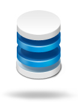

为什么要量身定制？
每个企业都是个性的，同一企业在不同阶段管理方式也会变化。只有适合的才是最好的，所以我们为您量身定制系统。
解决什么问题？
客户关系管理、供应链管理、日常办公、企业社交、统计报表。

海斯客户关系管理 Hi-CRM
围绕客户全生命周期，将市场活动、商机、合同订单、服务交付、销售跟踪和预测有机整合。
海斯供应链管理 Hi-SCM
涵盖订单处理、供应商、询报价、采购、检验、入库、出库等仓存全过程的管理，支持库存自动告警和存货核算。

海斯协同办公 Hi-Office
请假、报销、出差等事务申请帮您处理日常问题；还集成了邮件收发、私信、通知通告、任务提醒等多种应用，是一款实用的企业办公平台。

海斯报表平台 Hi-Report
海斯报表平台可为您随需定制报表。提供各类报表，包括实时统计报表，固定周期的月季年报表。帮助企业实现内部统一的数据上报机制。
海斯企业社交Hi-SNS
海斯为您营造一个活泼、平等的企业管理文化，使所有员工置身企业社区，轻松完成所有工作事务的交流汇报。 随需而设的、 并不孤立的许多圈子构成企业社区。微博风格的沟通氛围， 使大家知无不言，言无不尽。
海斯移动办公Hi-Mobile
海斯移动办公，让您随时随地查看最新指标，书写工作日志，参与业务讨论，提交业务表单。
海斯PaaS平台 Hi-AppEngine
海斯PaaS平台是一个提供应用快速在线开发和运行环境的云开发平台。无需服务器和编程基础，即可快速开发各种企业在线应用。